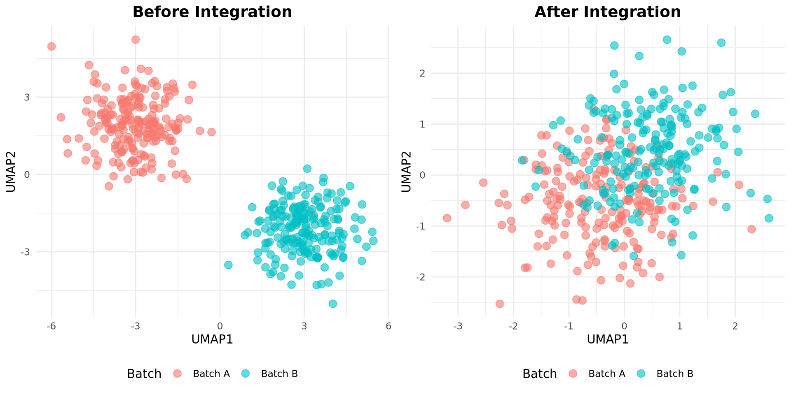
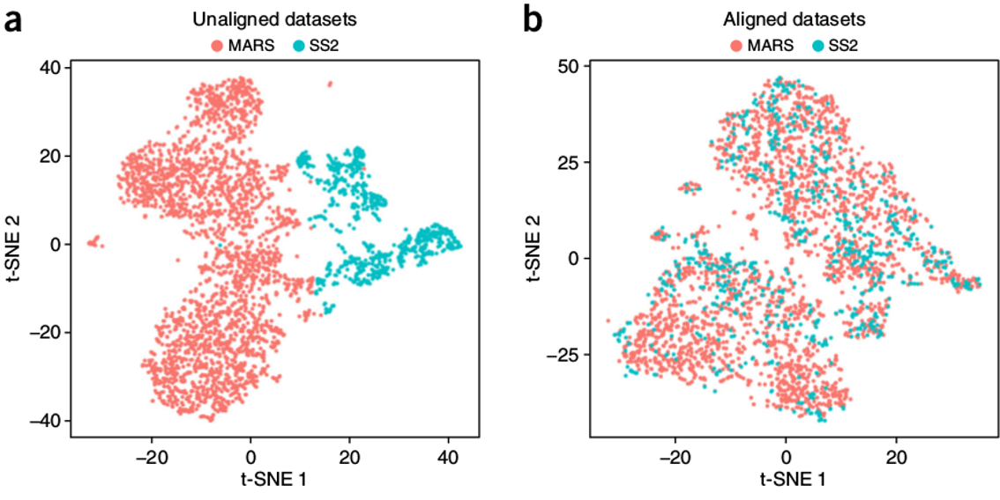
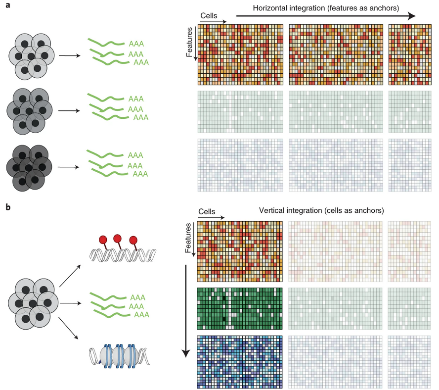
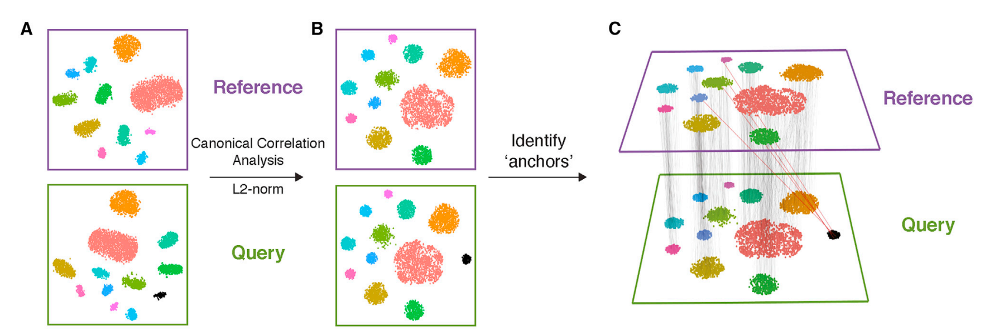
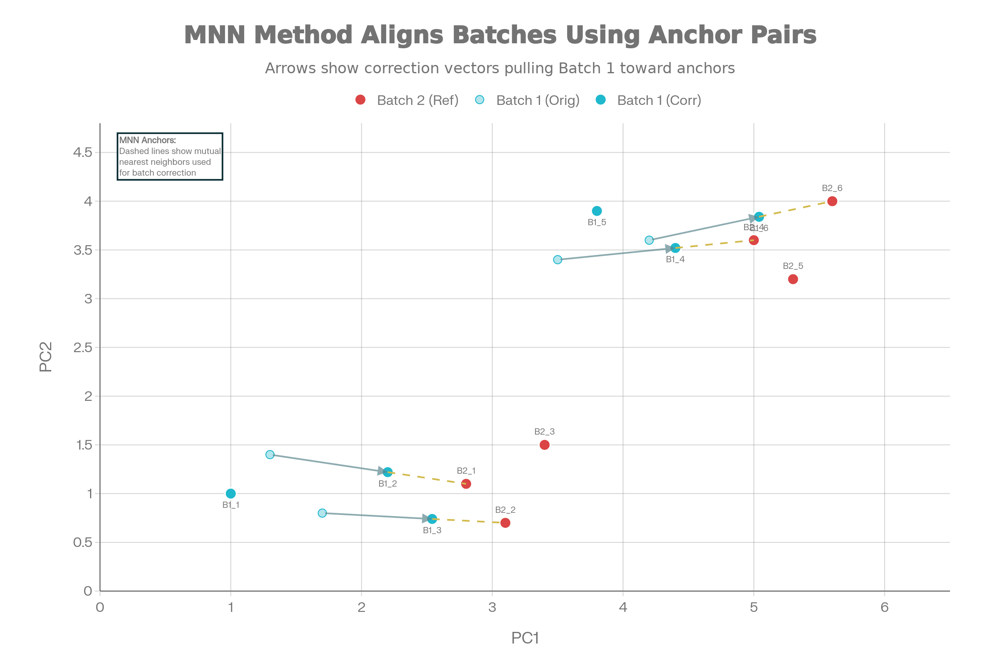
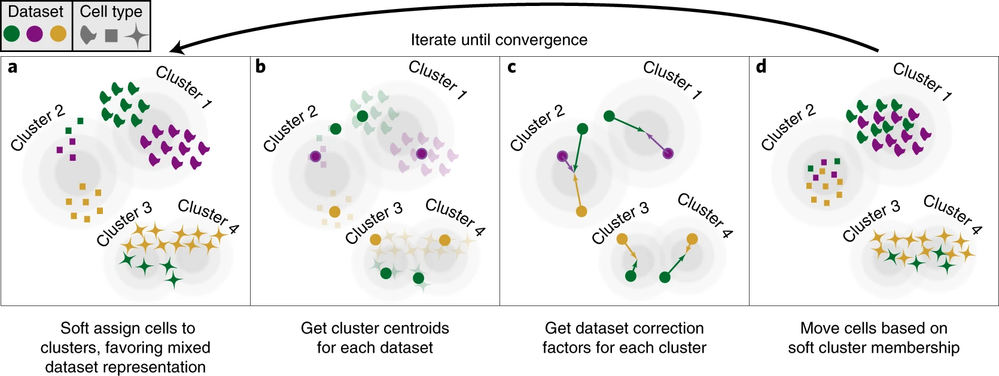
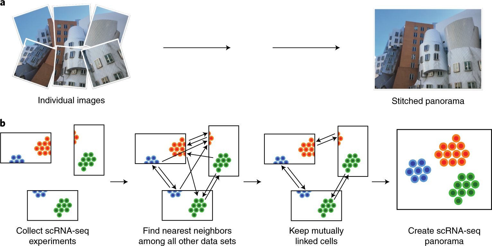
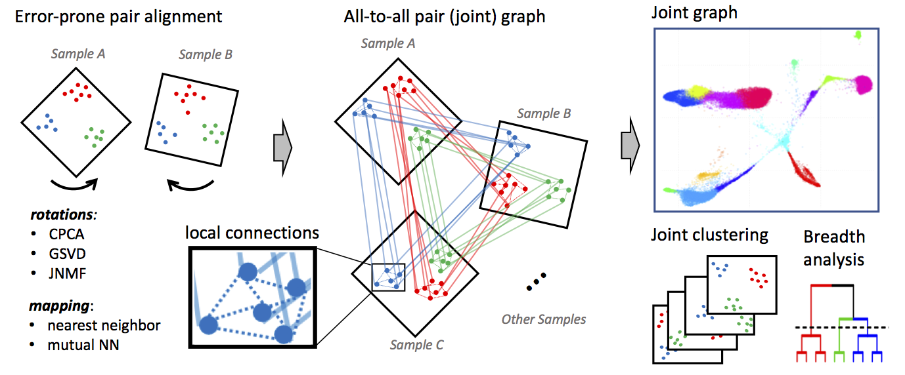
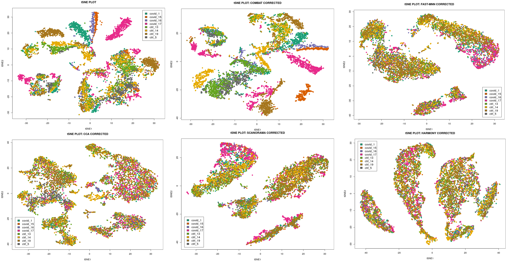

scRNA-seq Integration & Batch correction
Multi-sample/batch harmonization
Aditya Singh
14-Apr-2026

Overview: Why Integration?
The Challenge:
- Comparing cells across individuals/conditions
- Multiple scRNA-seq experiments from different batches
- Technical variations overshadow biological signals
- Need unified analysis across samples
Batch Effects Include:
- Multiple seq runs
- Library preparation protocols
- Platform variations
- Sample handling differences
- And (sadly) many more!
Key challenge: Distinguish biological variation from batch effects
Key Assumption: Batches are uncorrelated (orthogonal) to the variable of interest.
Integration vs Batch Correction
Code
%%{init: {'theme':'base', 'themeVariables': { 'fontSize': '14px', 'primaryTextColor':'#333'}}}%%
flowchart LR
B["Multiple<br/>Datasets?"]
B --> X["Same<br/>Experiment"]
X --> C["🔗<br/>INTEGRATION"]
B --> Y["Multiple<br/>Experiments"]
Y --> D["🧹<br/>BATCH<br/>CORRECTION"]
Y --> C
C --> C1["Align<br/>Biological<br/>Signals"]
C1 --> C3["Unified<br/>Cell Types"]
D --> D1["Remove<br/>Technical<br/>Noise"]
D1 --> D3["Clean<br/>Expression"]
C3 --> E["Proceed to<br/>Analysis"]
D3 --> E
classDef decision fill:#e1f5fe,color:#000
classDef action fill:#f3e5f5,color:#000
classDef result fill:#e8f5e8,color:#000
class B decision
class X,Y,D,C action
class C1,D1,E,C3,D3 result
linkStyle default stroke:#333,stroke-width:3px%%{init: {'theme':'base', 'themeVariables': { 'fontSize': '14px', 'primaryTextColor':'#333'}}}%%
flowchart LR
B["Multiple<br/>Datasets?"]
B --> X["Same<br/>Experiment"]
X --> C["🔗<br/>INTEGRATION"]
B --> Y["Multiple<br/>Experiments"]
Y --> D["🧹<br/>BATCH<br/>CORRECTION"]
Y --> C
C --> C1["Align<br/>Biological<br/>Signals"]
C1 --> C3["Unified<br/>Cell Types"]
D --> D1["Remove<br/>Technical<br/>Noise"]
D1 --> D3["Clean<br/>Expression"]
C3 --> E["Proceed to<br/>Analysis"]
D3 --> E
classDef decision fill:#e1f5fe,color:#000
classDef action fill:#f3e5f5,color:#000
classDef result fill:#e8f5e8,color:#000
class B decision
class X,Y,D,C action
class C1,D1,E,C3,D3 result
linkStyle default stroke:#333,stroke-width:3px
- Batch correction is a type of integration; vice versa is not true
- In practice, integration = batch correction + dataset merging
- If batch correction is needed, it’s done along with the integration of samples
- Multiple samples integration is almost always performed
- Batch correction is added to it only when needed
Closer look

- Panel “a”: Same type of data (scRNAseq)
- Integration & batch-correction (BC)
- 3 samples same run: Without BC
- 3 samples 2 batches: With BC
- Panel “b”: Multi-omics Integration
- Same samples, multiple platforms
- Example: RNAseq + ATACseq
- Beyond scope here
- Good to know and not to confuse
Orthogonal Assumption
✅ Better Design
Balanced Batches
| Sample | Condition | Batch |
|---|---|---|
| Patient A | Control | 1 |
| Patient B | Control | 2 |
| Patient C | Control | 3 |
| Patient D | Treated | 1 |
| Patient E | Treated | 2 |
| Patient F | Treated | 3 |
❌ Bad Design
Confounded Batches
| Sample | Condition | Batch |
|---|---|---|
| Patient A | Control | 1 |
| Patient B | Control | 1 |
| Patient C | Control | 1 |
| Patient D | Treated | 2 |
| Patient E | Treated | 2 |
| Patient F | Treated | 2 |
Overview of Integration Methods
| Method | Algorithm | Language | Library | Ref |
|---|---|---|---|---|
| CCA | Canonical Correlation Analysis | R | Seurat | Cell 2019 |
| MNN | Mutual Nearest Neighbors correction | R / Python | scater / Scanpy | Nat. Biotech 2018 |
| Conos | Graph-based joint kNN alignment | R | conos | Nat. Methods 2019 |
| Harmony | Iterative PC correction (soft-clustering) | R / Python | harmony/ harmonypy | Nat. Methods 2019 |
| Scanorama | Manifold alignment + SVD-based merging | Python | scanorama | Nat. Biotech 2019 |
Note: This is not an exhaustive list, just a selection of popular methods that we’ll cover in the exercises
Classic Batch Correction Methods
| Method | Algorithm | Language | Library | Ref |
|---|---|---|---|---|
| ComBat | Empirical Bayes location/scale adjustment | R | sva | Bioinformatics 2007 |
| ComBat-seq | Negative binomial ComBat for counts | R | ComBat_seq | NAR Genomics 2020 |
| limma | Linear models with empirical Bayes | R | limma | NAR 2015 |
| RUVSeq | Remove unwanted variation (factor-based) | R | RUVSeq | BMC Bioinf 2016 |
| SVA | Surrogate variable analysis | R | sva | PNAS 2017 |
| ZINB-WaVE | Zero-inflated negative binomial | R | zinbwave | Genome Biol 2017 |
Note: These methods were developed for bulk data and usually not perform well on scRNA-seq due to sparsity and zero-inflation. They are included here for context
AI/Deep Learning Integration Methods
| Method | Algorithm | Language | Library | Ref |
|---|---|---|---|---|
| scVI | Variational autoencoder | Python | scvi-tools | Nat Biotech 2022 |
| scANVI | Conditional variational autoencoder | Python | scvi-tools | Nat Methods 2021 |
| scGen | Causal VAE for perturbation modeling | Python | scgen | Nat Methods 2019 |
| SAUCIE | Self-supervised autoencoder | Python | SAUCIE | Nat Methods 2019 |
| DESC | Deep embedded single cell clustering | Python | DESC | Nat Communs 2020 |
Note: These methods are powerful but often require more computational resources and expertise to use effectively. Watch this space, future might be here!
CCA: Canonical Correlation Analysis

- Finds correlated features between batches
- Creates canonical variates capturing shared variation
- Projects cells into aligned latent space
- Linear approach - computationally efficient for large datasets
Mutual Nearest Neighbors (MNN) Integration
Core concept: Identifies pairs of cells that are each other’s nearest neighbors across batches in high-dimensional gene expression space
- Assumes shared cell types exist between batches
- Doesn’t require identical population composition
No predefined populations needed: Works without cell type annotations
How it works:
- Computes kNN graphs in PCA space
- Finds mutual nearest neighbor pairs across batches
- Applies linear batch-effect corrections using correction vectors
Minimal biological artifacts: Conservative approach, reducing risk of removing biological differences
Visualizing MNN Correction

Harmony: Iterative PC Correction

Harmony iteratively adjusts cell embeddings so that each cluster contains a balanced mix of batches
Scanorama: Manifold Alignment + SVD

- Builds manifold alignment between pairs of datasets
- Uses Singular Value Decomposition (SVD) for efficient merging
- Iteratively corrects and merges multiple datasets
Conos: Graph-Based Alignment

- Builds separate k-NN graphs for each sample
- Constructs joint graph by adding cross-sample edges between similar cells
- Preserves per-sample structure while enabling global analysis
- Particularly useful for many-sample studies with distinct biological states
Comparison

Comparison Matrix
| Aspect | CCA | MNN | Harmony | Scanorama | Conos |
|---|---|---|---|---|---|
| Speed | Fast | Slow | Fast | Medium | Slow |
| Scalability | ~10k | ~50k | 125k+ | ~50k | ~30k |
| Batch Correction | Good | Excellent | Good | Excellent | Very Good |
| Biology Preservation | Medium | Excellent | Excellent | Good | Excellent |
| Rare Type Detection | Poor | Excellent | Good | Medium | Good |
| Learning Curve | Low | Medium | Low | Medium | High |
| Language | R | R/Python | R/Python | Python | R |
| Graph-Based | No | No | No | No | Yes |
Benchmark References for Comparison Table
| Claim | Source | Key Finding | |
|---|---|---|---|
| Speed: Harmony > CCA > Scanorama > MNN > Conos | Tran et al. (2020) | Harmony 30-200x faster than MNN at 500k cells | |
| Scalability: Harmony(125k+) > MNN/Scanorama(50k) > CCA(10k) | Korsunsky et al. (2019) | Harmony scales to 1M+ cells, MNN fails >50k | |
| Batch Correction: MNN/Scanorama > Conos > Harmony > CCA | Luecken et al. (2022) | MNN/Scanorama top kBET/LISI scores | |
| Biology Preservation: MNN/Harmony/Conos > Scanorama > CCA | Luecken et al. (2022) | MNN best cell-cycle/trajectory conservation | |
| Rare Type Detection: MNN superior | Distilled information | MNN being local correction, preserves rare populations | |
| Learning Curve: CCA/Harmony < MNN/Scanorama < Conos | Personal opinion | Harmony/CCA: simple params; Conos: complex graphs |
Best Practices
- Feature selection: Use highly variable genes (2000-3000) before integration
- Batch awareness: Always specify batch variable during integration
- QC first: Remove low-quality cells before integration
- Metrics matter: Assess both batch mixing and biological preservation
- Visualize results: Check UMAP, violin plots by batch, cell type distribution
- Validate: Confirm known biology is preserved in integrated data
- Don’t fix something unbroken: Make sure there are batch effects before “fixing”
Common Pitfalls
Overcorrection
- Removing real biological signal
- Check with known marker genes
Batch structure ignored
- Not specifying batch variable correctly
- Can lead to suboptimal integration
Incompatible preprocessing
- Different normalization or scaling across batches
- Standardize preprocessing pipeline first
Confounded design
- Batch perfectly correlated with condition (eg. all controls in batch 1, all treated in batch 2)
- Integration cannot disentangle technical vs biological variation
Q&A
Key takeaway: Integration balances batch removal with biology preservation
Summary slides for revision follow
Summary: Integration goals
Q1. What is the main goal of scRNA-seq integration?
A: To align cells so they group by biological signal (for example, cell type) rather than technical or sample-specific differences.
Q2. Why can integration be needed even with one sequencing batch?
A: Different samples in the same run can still differ in preparation, dissociation, or depth, making cells cluster by sample instead of cell type.
Q3. What pattern in a UMAP suggests batch effect problems?
A: Clusters separate mainly by batch label even though the same cell type exists in all batches.
Summary: CCA / Seurat anchors
Q4. Conceptually, what does CCA do for integration?
A: It finds shared low-dimensional “correlated directions” across datasets where similar cell states align.
Q5. What are “anchors” in Seurat’s CCA-based integration?
A: Pairs or small groups of cells from different datasets that represent the same biological state and are used as reference points for alignment.
Q6. Simple example
A: Take T cells from patient A and B that look similar, treat them as anchors, and warp both datasets so T cells from A and B overlap in the joint space.
Summary: Harmony
Q7. What is the core idea behind Harmony?
A: Start in PCA space, then iteratively shift cell embeddings so each cluster has similar contributions from each batch, reducing batch-driven structure.
Q8. Why is Harmony often practical for large datasets?
A: It operates on PCs, is relatively fast, and fits into a simple PCA → Harmony → UMAP workflow.
Q9. Metaphor for Harmony’s adjustment
A: You have groups of similar cells on a map; Harmony gently nudges cells from overrepresented batches so each group has a fair mix of batches.
Summary: MNN & Scanorama
Q10. What is a mutual nearest neighbors (MNN) pair?
A: A pair of cells, one from each dataset, where each is among the nearest neighbors of the other in expression space.
Q11. How does MNN-based integration use these pairs?
A: It assumes MNN pairs represent the same cell state and computes local correction vectors to align the datasets around those pairs.
Q12. Intuitive example for MNN in lecture
A: If a T cell in dataset A and a T cell in dataset B are each other’s closest match, link them and use that link to locally shift one dataset towards the other.
Q13. What is the main idea behind Scanorama?
A: It uses MNN-like matches across many datasets and stitches them together like a panorama to build a unified embedding.
Q14. Why is Scanorama useful for many-dataset studies?
A: It can integrate multiple experiments at once by finding shared cell populations and merging them into a common space.
Summary: Conos
Q15. What is Conos’ high-level approach to integration?
A: It builds a graph for each sample, then constructs a joint graph across samples using cross-sample neighbors, and analyzes this global graph for clustering and alignment.
Q16. When is Conos particularly attractive?
A: When you have many samples and want to keep per-sample identity while still obtaining joint clustering from the combined graph.
Q17. Simple metaphor for Conos
A: Each sample is its own social network; Conos adds edges between similar people across networks and then analyzes the big merged social graph.
Summary: Over- vs under-integration & choice
Q18. How can you spot “over-integration” ?
A: Marker genes lose specificity across clusters, known biology is obscured, and distinct cell types merge together.
Q19. How can you spot “under-integration”?
A: UMAP: If technically distinct groups are not-integrated (eg. sequencing run 1 and 2)
Q20. Simple rule-of-thumb when choosing an integration method
A: Use anchor/CCA or Harmony for typical multi-sample datasets; consider MNN/Scanorama for more local alignment or many datasets; use Conos for graph-based integration across many samples while preserving sample identity.
Resources & Further reading
- Luecken, M.D., Büttner, M., Chaichoompu, K. et al. Benchmarking atlas-level data integration in single-cell genomics. Nat Methods 19, 41–50 (2022). https://doi.org/10.1038/s41592-021-01336-8
- Korsunsky, I., Millard, N., Fan, J. et al. Fast, sensitive and accurate integration of single-cell data with Harmony. Nat Methods 16, 1289–1296 (2019). https://doi.org/10.1038/s41592-019-0619-0
- Hie, B., Bryson, B. & Berger, B. Efficient integration of heterogeneous single-cell transcriptomes using Scanorama. Nat Biotechnol 37, 685–691 (2019). https://doi.org/10.1038/s41587-019-0113-3
- Argelaguet, R., Velten, B., Arnol,D, S. et al. Multi-omics factor analysis—a framework for unsupervised integration of multi-omics data sets. Mol Syst Biol 14, e8124 (2018). https://doi.org/10.15252/msb.20178124
- Barkas N., Petukhov V., Nikolaeva D., Lozinsky Y., Demharter S., Khodosevich K., & Kharchenko P.V. Joint analysis of heterogeneous single-cell RNA-seq dataset collections. Nature Methods, (2019). https://doi.org/10.1038/s41592-019-0466-z